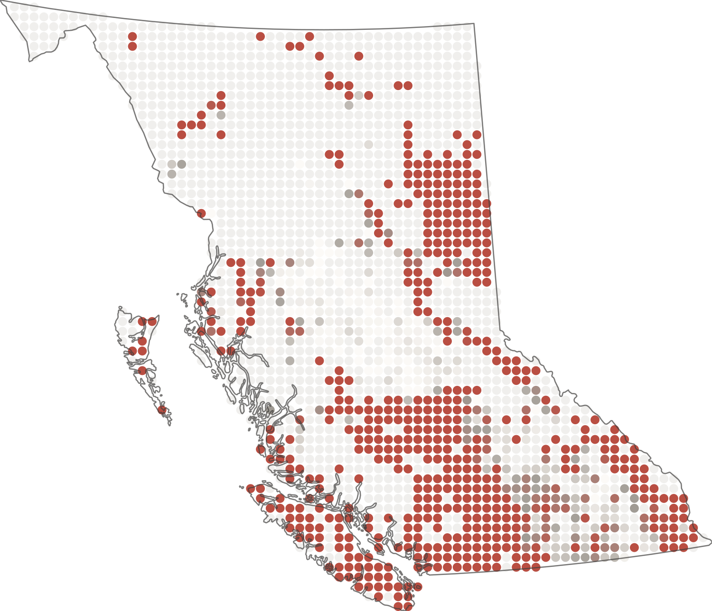
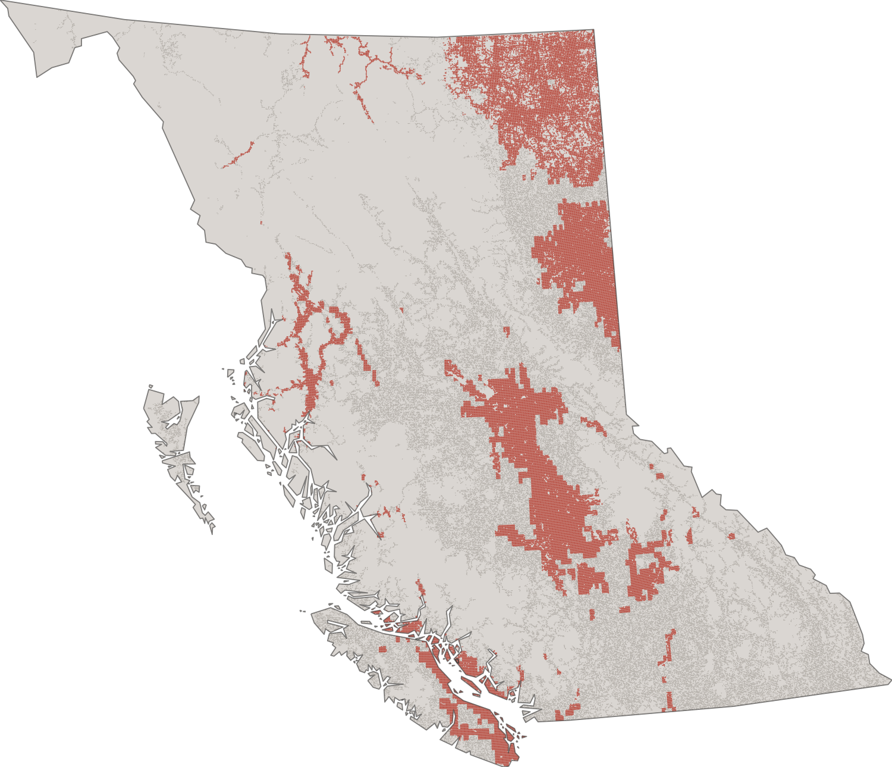
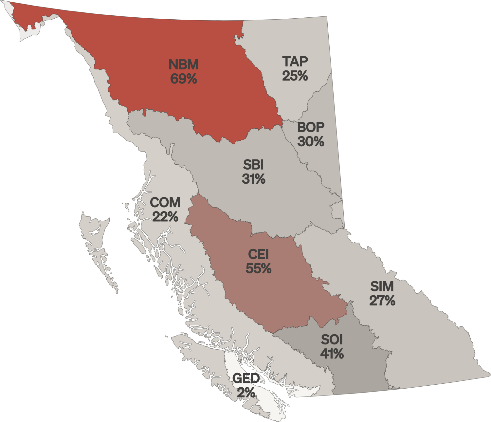

A consistent way to summarise people, infrastructure and environmental assets in mapped hazard areas—and make those relationships easier to read.
My role
Spatial data processing and grid summaries
Analysis framework
2.5 km cells · exposed / non-exposed
Visual work
Independent editorial reinterpretation
What was assessed?
Hazard exposure brings asset locations together with mapped hazards. The question is which people, infrastructure and environmental assets intersect those areas, and how much falls outside them.
A consistent spatial framework allows different asset categories to be summarised without losing the distinction between exposed and non-exposed. Exposure alone does not describe the likelihood or severity of a loss.
My contribution
I streamlined cleaned GeoPackage outputs from spatial analysis colleagues into grid-based summaries. For each 2,500 m cell, the pipeline summarised the exposed and non-exposed portions of population, environmental assets, infrastructure and other asset categories.
My professional scope was the data pipeline. The wider team delivered the provincial website and official visualisations. The four maps below are my independent visual reinterpretations.
A common grid makes separate asset layers comparable. The professional pipeline summarised exposed and non-exposed assets within 2.5 km cells; this simplified display introduces that organising principle. Display colours do not define a calibrated hazard scale.

02 / Seismic
Where are people exposed?
An 8 km equal-area circle grid presents the share of population exposed to seismic hazard. Non-uniform colour intervals preserve local variation where population density is highly skewed. This display grid is distinct from the 2.5 km processing grid.

03 / Extreme heat
Where does transport intersect heat?
The mosaic groups road and rail infrastructure into no exposure, lower exposure, and high exposure at or above the 75th-percentile threshold. The hard classification makes the spatial pattern legible; it does not estimate damage or service disruption.

04 / Wildfire
How does environmental exposure vary?
Environmental exposure is aggregated to ecoprovince units and expressed as a regional percentage. This view supports broad comparison, while regional averages can obscure local hotspots. The percentages are retained from the supplied visual reconstruction, not independently verified provincial statistics.